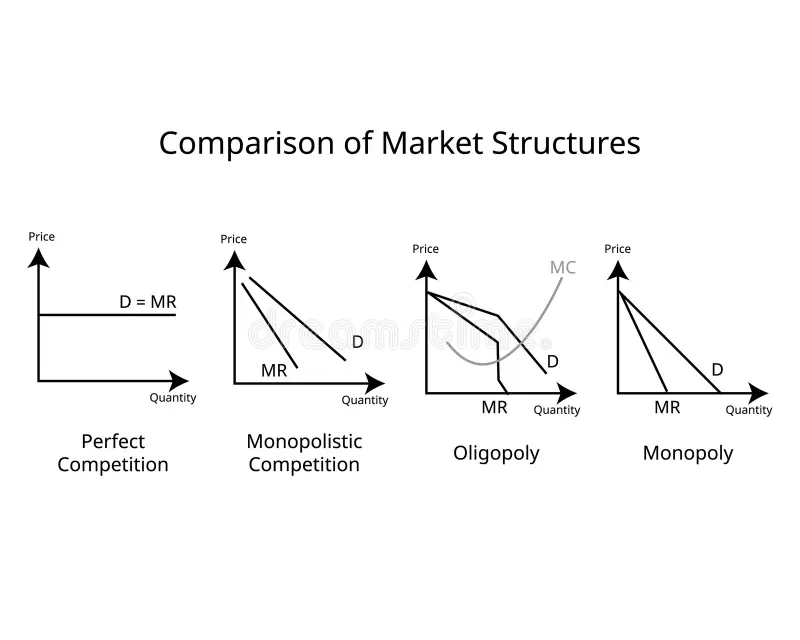
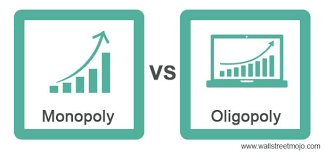

Ang Market Equilibrium ay ang punto kung saan magkapantay ang dami ng demand at supply sa isang takdang presyo. Sa puntong ito, walang kakulangan o labis sa pamilihan.
Kapag ang dami ng gusto ng mamimili (demand) ay kapantay ng dami ng kaya at gustong ibenta ng prodyuser (supply), nagkakaroon ng tinatawag na equilibrium price at equilibrium quantity.
Ito ang presyo kung saan parehong kuntento ang mamimili at prodyuser. Kung tumaas o bumaba ang presyo mula rito, nagkakaroon ng labis o kakulangan.
| Sitwasyon | Kahulugan | Epekto |
|---|---|---|
| Surplus | Mas marami ang supply kaysa demand | Bumababa ang presyo |
| Shortage | Mas marami ang demand kaysa supply | Tumataas ang presyo |
Kapag nagbago ang demand o supply (dahil sa presyo, kita, o teknolohiya), lilipat din ang equilibrium point. Halimbawa, kung tumaas ang demand, tataas din ang equilibrium price at quantity.
Sa kabuuan, ang market equilibrium ay mahalaga upang mapanatili ang balanse sa pamilihan at maiwasan ang labis o kakulangan sa produkto.
 